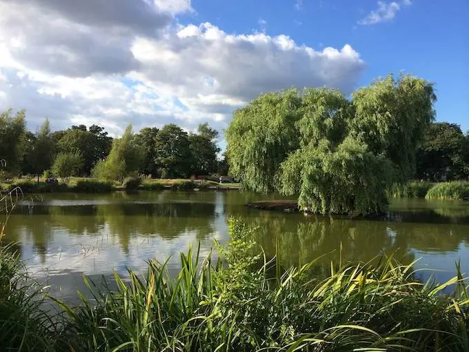
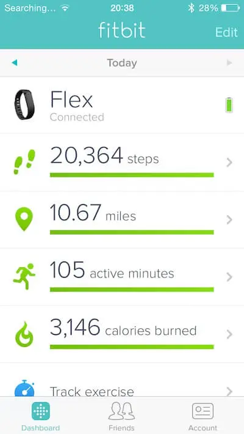

Moving To London
Info
| Summary | If you can go on an adventure, then what are you waiting for? |
|---|---|
| Shared | 2014-09-01 |
| Revised | 2023-02-04 @ 13:00 UTC |
2 months ago I decided I wanted to go to London for an indefinite amount of time.

There were no external driving factors behind this decision; no significant other, no new job, no criminal charges, no desire to leave my home in Charleston, SC.
I love my family, friends, beaches, the spartina grass (marshes), the plough mud, and the odd—yet wonderful—assortment of personalities that exist in Charleston.
"If everything is so wonderful, why leave?"
Because I can. Because of this list of things I don’t have:
- no wife
- no kids
- no house
- no debt
Here is another way to view this list:
- wife-free
- kid-free
- house-free
- debt-free
I understand that ¾ of the items on that list are desired by many folks, and that what I have just described could also be classified as "responsibility-free." Or, as I have understood before, that the life of the traveler is rootless and thereby does not bear the burden of creating something lasting. I find this statement accurate; however, I also find that safety makes me complacent and breeds stagnation and settling: the opposite of my battle and striving for excellence, or the Greek areté. Thus, in order to better myself, I decided to shake things up a bit!
Additionally, and worthy of note, every single person I spoke with about traveling this way said this:
"If I were you, I’d be gone in a second."
I will miss my grandparents, parents, siblings, my dogs, aunts, uncles, cousins, surfing, and everything that makes Charleston great.
But I shall return!
My Time Thus far
After serenading the Delta counter attendants in the Charleston airport with my guitar and song, I had a sleepless and safe flight to London!
When I finished riding a number of trains and other ground transportation, I arrived in Clapham at Sam’s house, where I was greeted with smiles, cheers, and Heineken.
Soon thereafter, I decided to get to know my new area better. My solution? Go on a run and get lost. Here is my fitbit from that day:

You could say I got lost. I like to think I was "exploring." Nevertheless, I had a fantastic time and look forward to many more.